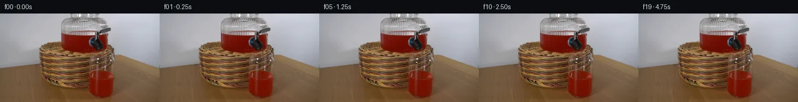

![首帧]()

Round 00
2026-11-05T02:25:53.940192+00:00像素候选变化代码 +145/−0inspection 更新
pixels bb9bebcfbfa7b077 · code 23ffe415ee289625
查看本轮 generate.py 真实 diff
--- previous/generate.py
+++ current/generate.py
@@ -0,0 +1,145 @@
+#!/usr/bin/env python3
+"""Generate the PixelWorld-Text deliverables deterministically.
+
+The requested event is an undisturbed static equilibrium, so every output
+frame is a pixel-exact copy of the supplied first frame. No image viewing or
+external assets are used.
+"""
+
+from __future__ import annotations
+
+import hashlib
+import shutil
+from pathlib import Path
+
+import numpy as np
+from PIL import Image, ImageDraw, ImageFont
+
+
+ROOT = Path(__file__).resolve().parent
+SOURCE = ROOT / "first_frame.png"
+FRAMES_DIR = ROOT / "frames"
+FRAME_COUNT = 20
+WIDTH = 256
+HEIGHT = 144
+FPS = 4
+
+
+def rgb_to_u32(rgb: np.ndarray) -> np.ndarray:
+ """Pack uint8 RGB into uint32 values in 0xRRGGBB order."""
+ rgb32 = rgb.astype(np.uint32)
+ return (rgb32[..., 0] << 16) | (rgb32[..., 1] << 8) | rgb32[..., 2]
+
+
+def u32_to_rgb(packed: np.ndarray) -> np.ndarray:
+ """Unpack uint32 0xRRGGBB values to uint8 RGB."""
+ return np.stack(
+ [
+ (packed >> 16) & 0xFF,
+ (packed >> 8) & 0xFF,
+ packed & 0xFF,
+ ],
+ axis=-1,
+ ).astype(np.uint8)
+
+
+def make_inspection(frames: np.ndarray) -> Image.Image:
+ """Build a labeled 5-by-4 contact sheet containing all sampled frames."""
+ columns, rows = 5, 4
+ label_h = 18
+ sheet = Image.new("RGB", (columns * WIDTH, rows * (HEIGHT + label_h)), (18, 18, 18))
+ draw = ImageDraw.Draw(sheet)
+ font = ImageFont.load_default()
+ for i, frame in enumerate(frames):
+ col, row = i % columns, i // columns
+ x, y = col * WIDTH, row * (HEIGHT + label_h)
+ sheet.paste(Image.fromarray(frame, "RGB"), (x, y + label_h))
+ draw.text((x + 5, y + 4), f"frame {i:02d} t={i / FPS:.2f}s", fill=(235, 235, 235), font=font)
+ return sheet
+
+
+def make_transition_check(frames: np.ndarray) -> Image.Image:
+ """Show endpoints and an amplified endpoint difference with metrics."""
+ label_h = 36
+ out = Image.new("RGB", (WIDTH * 3, HEIGHT + label_h), (15, 15, 15))
+ draw = ImageDraw.Draw(out)
+ font = ImageFont.load_default()
+
+ diff = np.abs(frames[-1].astype(np.int16) - frames[0].astype(np.int16)).astype(np.uint8)
+ amplified = np.clip(diff.astype(np.uint16) * 16, 0, 255).astype(np.uint8)
+ out.paste(Image.fromarray(frames[0], "RGB"), (0, label_h))
+ out.paste(Image.fromarray(frames[-1], "RGB"), (WIDTH, label_h))
+ out.paste(Image.fromarray(amplified, "RGB"), (WIDTH * 2, label_h))
+
+ adjacent_counts = [int(np.count_nonzero(np.any(frames[i] != frames[i - 1], axis=2))) for i in range(1, FRAME_COUNT)]
+ draw.text((5, 4), "frame 00 / source", fill=(235, 235, 235), font=font)
+ draw.text((WIDTH + 5, 4), "frame 19 / endpoint", fill=(235, 235, 235), font=font)
+ draw.text((WIDTH * 2 + 5, 4), "|19 - 00| x16", fill=(235, 235, 235), font=font)
+ draw.text((5, 20), "Static hold: 0 changed pixels in every adjacent transition", fill=(128, 230, 160), font=font)
+ assert adjacent_counts == [0] * (FRAME_COUNT - 1)
+ return out
+
+
+def verify_outputs(source_rgb: np.ndarray, packed: np.ndarray) -> dict[str, object]:
+ """Reload every PNG and compare it to both source and packed tensor."""
+ decoded = u32_to_rgb(packed)
+ assert packed.dtype == np.uint32
+ assert packed.shape == (FRAME_COUNT, HEIGHT, WIDTH)
… diff truncated; 58 more lines …